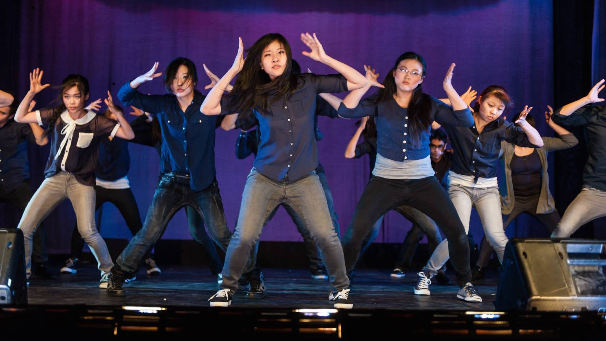
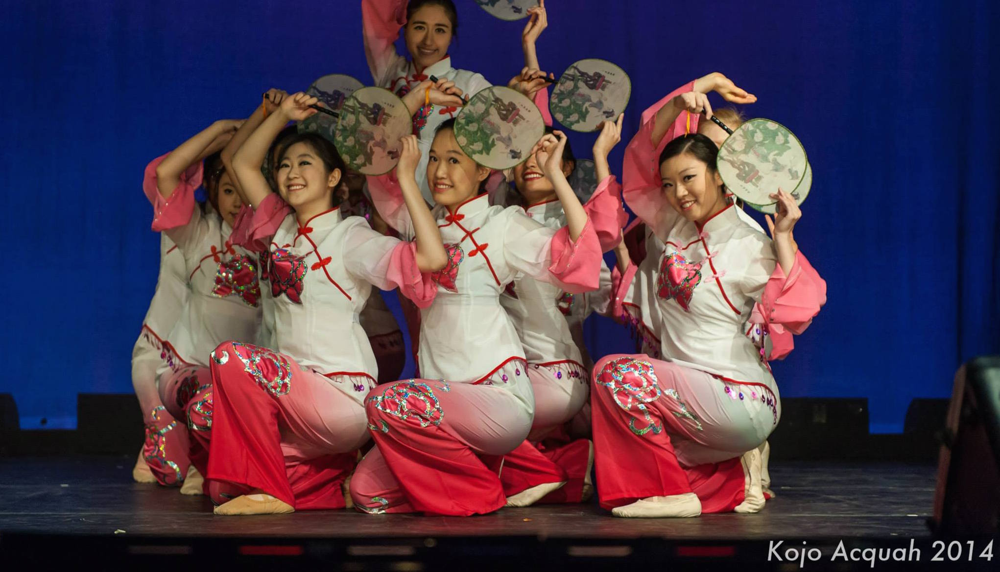
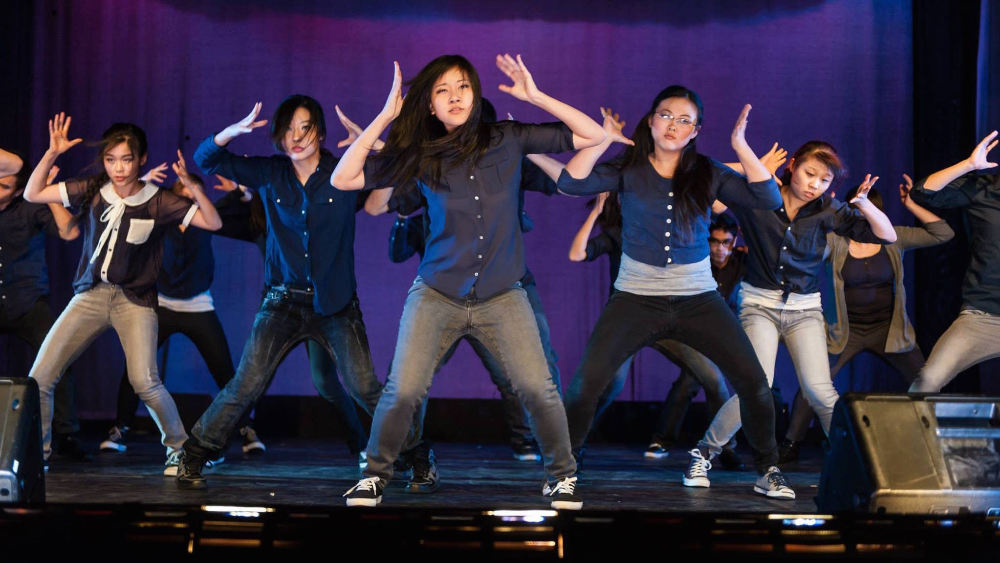
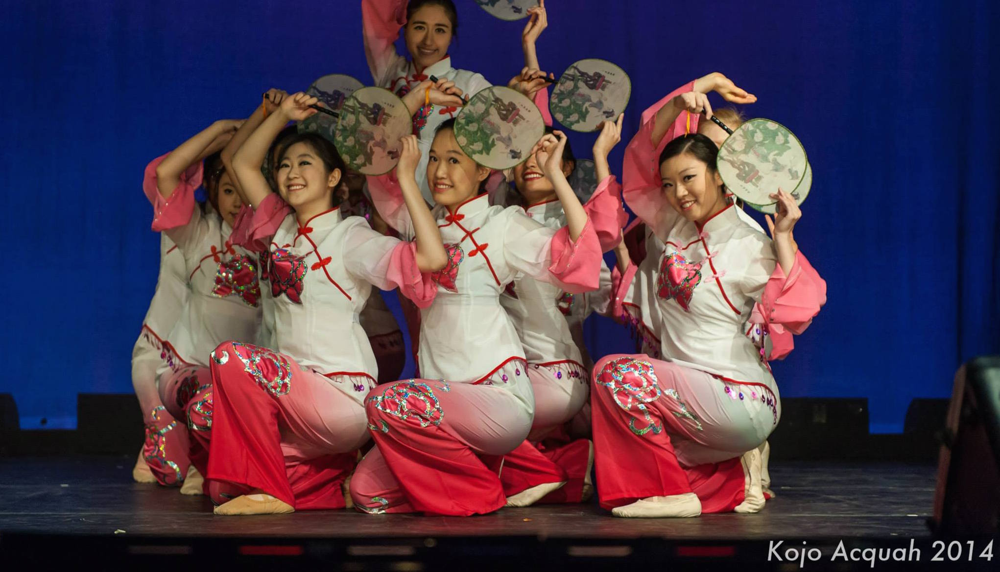
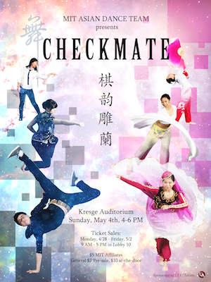

The MIT Asian Dance Team (MIT ADT) provides the MIT and Greater Boston communities with a taste of East Asian culture via the medium of dance. We perform works from traditional Chinese, aboriginal folk, and contemporary lyrical to Korean hip-hop and Japanese idol dance!!
Come see us perform spectacular Han, Dai, Xinjiang, and Mongolian ethnic pieces, classical and contemporary dances, as well as hip-hop pieces by Akdong Musician, B1A4, Infinite, Kara, and more! We will also host guest performances from groups including MIT Lion Dance, Syncopasian, and Dance Revelasian!
Tickets are $5 for MIT affiliates. For general admission, tickets are $7 if bought early and $10 at the door. All tickets reserved through EventBrite are paid for at the door and are charged the early price - $5 for MIT affiliates and $7 for general admission. Admission is free for children under 10 years of age. Tickets may be purchased at the following locations:
Tickets can also be reserved online through Eventbrite. MIT Kresge Little Theatre is a small venue, so please be sure to arrive 15 minutes early or your ticket may be resold.
Recent News
Spring 2015 Auditions!
Interested in joining us this term? Spring 2015 auditions will be held on Saturday, February 7th, 2015 from 2-5:30 pm in the McCormick Dance Studio.
At auditions, you will learn some traditional and hip-hop choreography, as well as preview this semester's pieces. Please wear comfortable clothing that you can move in.
Don't worry if you don't have any dance experience! Many of our members join without prior dance experience. We accept all those who audition, regardless of experience, race, age, gender, etc. (Note: You do not have to be a first-year, or even an undergraduate, to audition. We welcome everyone and would love to have you!)

We will have three performances of our Fall 2014 showcase: Thursday, December 11, 4-6pm; Thursday, December 11, 7:30-9:30pm; and Friday, December 12, 4-6pm, all in MIT Kresge Little Theatre. Come see us perform spectacular Han, Yi, Chaoxian (Korean), and Tibetan ethnic pieces, classical and contemporary dances, as well as hip-hop pieces by 2NE1, APink, U-Kiss, and BTS! We will also host guest performances from groups including MIT Lion Dance, Syncopasian, the Ohms, Bhangra, and Mirchi!
Tickets are $5 for MIT affiliates. For general admission, tickets are $7 if bought early and $10 at the door. All tickets reserved through EventBrite are paid for at the door and are charged the early price - $5 for MIT affiliates and $7 for general admission. Admission is free for children under 10 years of age. Tickets may be purchased at the following locations:
Wednesday, Dec 3 - Friday, Dec 5: Lobby 10
Monday, Dec 8 - Wednesday, Dec 10: Student Center
Tickets can also be reserved online through Eventbrite. MIT Kresge Little Theatre is a small venue, so please be sure to arrive 15 minutes early or your ticket may be resold.
Fall 2014 Auditions!Interested in joining us this term? Fall 2014 auditions will be held on Saturday, Septempber 6th, 2014 from 2-5 pm in the McCormick Dance Studio.
At auditions, you will learn some traditional and hip-hop choreography, as well as preview this semester's pieces. Please wear comfortable clothing that you can move in.
Don't worry if you don't have any dance experience! Many of our members join without prior dance experience. We accept all those who audition, regardless of experience, race, age, gender, etc. (Note: You do not have to be a first-year, or even an undergraduate, to audition. We welcome everyone and would love to have you!)
If you have any questions about auditions, check out the Auditions page or send an email to adt-exec@mit.edu!
Spring 2014 Showcase: Checkmkate The MIT Asian Dance Team will be having our Spring 2014 Showcase on Sunday, May 4th in Kresge Auditorium from 4:00-6:00 pm.
The MIT Asian Dance Team will be having our Spring 2014 Showcase on Sunday, May 4th in Kresge Auditorium from 4:00-6:00 pm. Come see us perform amazing dances in styles including Dai, Xinjiang, Han, contemporary, and classical Chinese, as well as hip-hop and pop performances to songs by CL, G-Dragon, Super Junior, and more!
Tickets are $5 for MIT affiliates. For non-MIT affiliates, tickets cost $7 if purchased ahead of time or $10 at the door. Children ages 10 and under are free!
Tickets will be on sale from 9:00 am to 5pm every day from Monday, April 28th to Friday, May 2 in Lobby 10. Stop buy to purchase your tickets, or reserve them online on Eventbrite and get the pre-door price at the door!
Spring 2014 Auditions!Interested in joining us this term? Spring 2014 auditions will be held on Saturday, February 8th, 2014 from 3-5:30 pm in the McCormick Dance Studio.
At auditions, you will learn some traditional and hip-hop choreography, as well as preview this semester's pieces. Please wear comfortable clothing that you can move in.
Don't worry if you don't have any dance experience! Many of our members join without prior dance experience. We accept all those who audition, regardless of experience, race, age, gender, etc. (Note: You do not have to be a first-year, or even an undergraduate, to audition. We welcome everyone and would love to have you!)

The MIT Asian Dance Team Presents... 'Illusions,' our Fall 2013 showcase. We will be having two shows, on Thursday, December 12 and Friday, December 13. Both shows will be from 4-6 PM in Little Kresge Theatre.
Come see us perform spectacular Dai, Mongolian, and Han ethnic pieces, classical and contemporary dances, as well as K-pop pieces by Vixx, Nine Muses, Evol, and Show Luo! We will also have guest performances from groups including MIT Lion Dance, Bhangra, Syncopasian, and Ohms, as well as Boston-area performing groups such as Dance Revelasian and YMCA.
Tickets are $5 for MIT affiliates. For general admission, tickets are $7 if bought early and $10 at the door. Admission is free for children under 10 years of age. Tickets may be purchased at the following locations:
Thursday Dec. 5 & Friday Dec. 6 - Student Center (W20)
Monday, Dec. 9 & Tuesday Dec. 10 - Student Center (W20)
Wednesday Dec. 11 - Lobby 10
Thursday Dec. 12 & Friday Dec. 13 - At the door
Ticket vouchers may also be obtained through EventBrite. These vouchers may be presented at the door for early prices ($5 for MIT affiliates, $7 for non-affiliates). Note: if you are bringing children under 10, please "purchase" ticket vouchers for them anyway, just so we know how many seats to reserve.
Any questions? Please email us at adt-exec@mit.edu.
Upcoming Events
Dec 11 & 12, 2014Fall 2014 Showcase: Rebirth
We will have three performances of our Fall 2014 showcase: Thursday, December 11, 4-6pm; Thursday, December 11, 7:30-9:30pm; and Friday, December 12, 4-6pm. For more information, visit our Performances page!